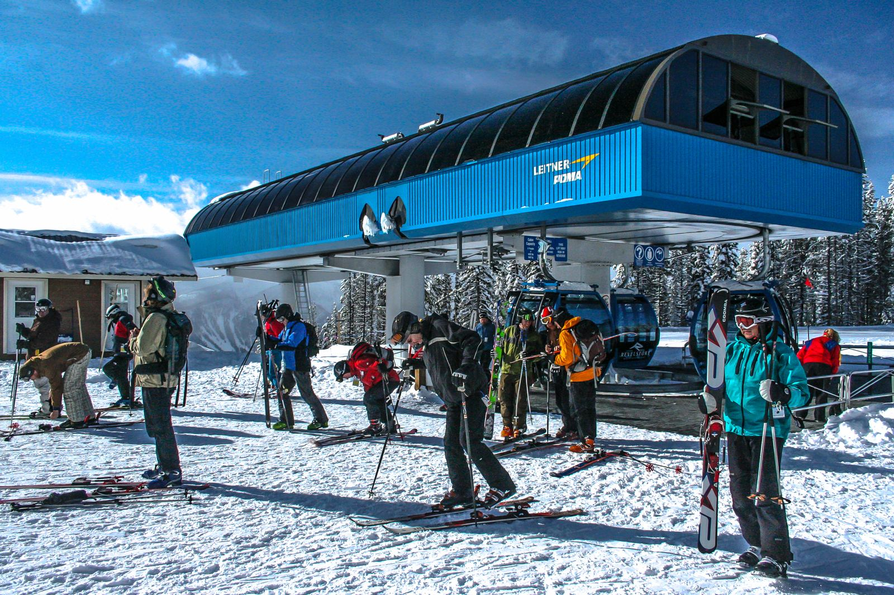
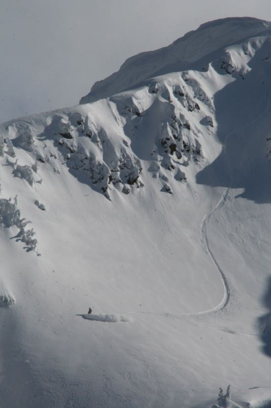
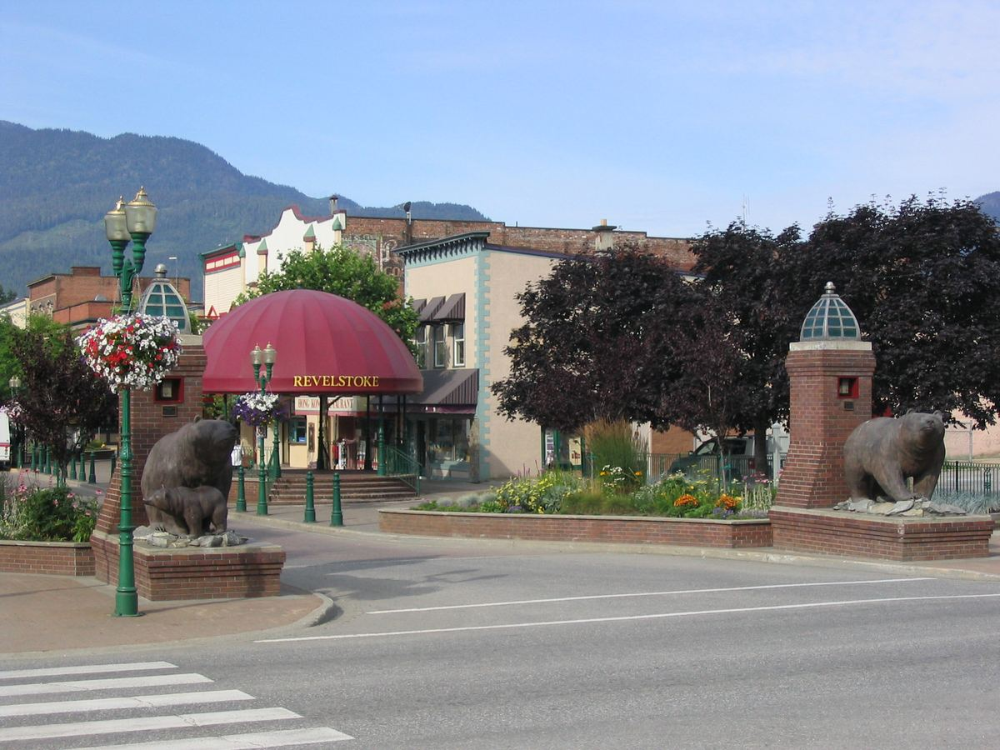

Quick look
Scenario table
Comfortable carrying capacity by phase
The terrain and the parcels, mapped
Everything on this map is a real, computed layer from the analysis notebooks, not an illustration: the resort boundary, all 7 lifts and 116 runs with their DEM-derived slope, the elevation bands used for the snow-reliability work, and the parcels that survive the full land-capacity suitability funnel. The underlying claims for these layers are agent-checked, not yet human-verified — see the evidence note below the map.
Terrain, lift, and run layers come from step 03; elevation bands from step 04; the 190 parcels shown are the ones that pass every filter in step 07's suitability funnel (zoning, floodplain/hazard/ ALR exclusion, service distance, building coverage, and slope) out of 5,987 parcels in the City of Revelstoke — not a claim that housing could be built on all of them, just that none of the tested constraints rule them out. Parcel geometry is ParcelMap BC, never the City's own data, per this project's publishing rule.
The chain, in plain language

A ski resort's master plan states a target number of skiers it is designed to serve at once: its comfortable carrying capacity, or CCC. That figure comes from adding up what every lift on the mountain can move in a day, adjusted for how much vertical terrain guests of different ability levels are expected to ski. Revelstoke Mountain Resort's own 2019 master plan appendix states this calculation in full, lift by lift, and this project reproduces it from those same numbers rather than taking the resort's total on faith.

Snow reliability should adjust that capacity, since a resort that cannot count on enough snow cannot actually run at its designed capacity every season. This project built the elevation bands and pulled real multi-model climate projections, but the historical baseline and the projected snowfall don't reconcile under any tested density assumption — a real, reported discrepancy, not a smoothed-over number. That gap is shown in the table above, not hidden.

More skiers means more staff. This project found exactly one public source giving both a resort's approved capacity and its peak employee count together (a comparator resort, not Revelstoke itself), and used that single ratio, with an explicit sensitivity range, to estimate Revelstoke's own workforce at each phase of its master plan. Subtracting the resort's own planned staff housing from that estimate gives a range of how many workers would need housing somewhere else — housing that would need to be found in the townsite shown here, or on the resort's own base lands.
Whether the City has room for that housing is a land-capacity question. This project found live, queryable zoning and parcel data for the City of Revelstoke and ran a full suitability funnel against it — zoning, floodplain, hazard and agricultural exclusion, service distance, building coverage, and slope — down to 190 candidate parcels, mapped above. It could not yet convert that into an actual unit count, because the zoning bylaw's density rules were not found this session.
Methods
Read the written report — the same numbers above, in prose, with every factual sentence citing a human-verified claim.
Every step's full notebook, code and all, reproduces the numbers above:
This project's rule is that nothing gets cited in the written report until a person, not just an automated check, has verified it. That sign-off has happened for the claims the report cites; the spatial layers on the map above (steps 03, 04, 07, 10) rest on claims that are agent-checked or still needs-review, shown here as real computed output, not yet promoted into the cited report.